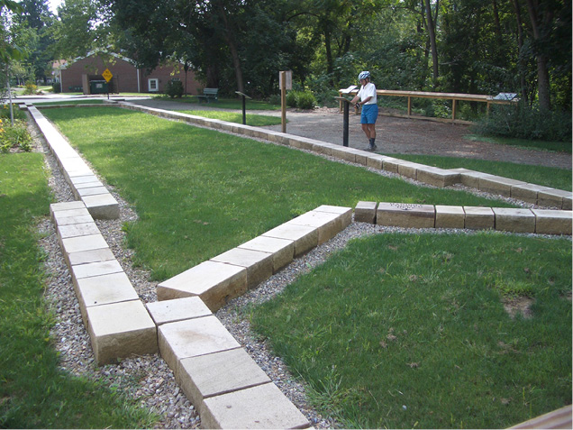
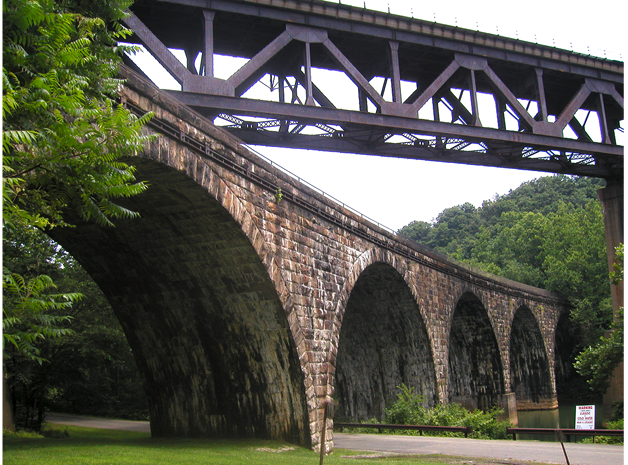

|
West Penn Trail |
one moment while we fetch a trail picture
|
|
|
West Penn Trail |
one moment while we fetch a trail picture
|
| Location | West of Saltsburg, through Conemaugh Recreation Area to Newport Rd Westmoreland and Indiana County | ||
| Trailheads | Saltsburg, Tunnelton Rd, Auen Rd, Conemaugh Dam, Livermore, Newport Rd | ||
| Length, Surface | 14.6 miles total (4.2 tar and chip, 8.5 crushed limestone, 0.9 paved, 0.9 packed dirt, 0.1 stairs) | ||
| Character | Uncrowded, rural, alternately sunny and shady, | ||
| Usage restrictions | No motorized vehicles, no snowmobile, | ||
| Amenities | Saltsburg, and on US22 | ||
| Driving time from Pittsburgh | 0 hours 52 minutes |
Saltsburg River Section (MP2.1-west to MP0.0 to MP3.7)—5.8 level miles along the banks of the Conemaugh River and Kiskiminetas River.
Dick Mayer Section (MP3.7 to MP6.4)—2.7 hilly miles from the Conemaugh River to the Conemaugh Dam Recreation area.
Conemaugh Dam Recreation Area Section (MP6.4 to MP7.3)—0.9 hilly miles through the Recreation Area.
Bow Ridge Section (MP7.3 to MP8.3)—1.0 steep miles up and over the ridge between two of the river bows.
Conemaugh River Lake Section (MP8.3 to MP12.5)—4.2 level miles along railroad grade crossing the river five times, mostly on wide stone arch bridges.
Saltsburg River Section—5.8 miles
The trail begins about two miles north of Saltsburg with no road access. MP0 is in the Canal St parking lot in Saltsburg. Mileages count both west and east from Canal St parking.
Starting at the western dead-end (MP2.1-west) and heading east toward Saltsburg, the trail immediately passes an oil well storage container in an open field. About a tenth of a mile later it enters Pennsylvania woods on an embankment with the river on the right and hillside on the left. Just past MP1.5-west it crosses Black Legs Ck. Near Saltsburg there is a nice waterfall (MP8.2-west). As the trail enters Saltsburg, in the park by the war memorial, the trail splits. The left path passes a full scale interpretive display of a canal lock (MP0.5-west) and goes through town. It crosses Chestnut Way, jogs around a residential building, and enters Canal Park. A three-block replica of the canal path through town that ends at Market St. The right path follows the river and crosses under PA286. At the boat launch this path jogs one block left/east on Market St, where the trails join.

Historical display marks former canal lock
From Market St the trail continues 0.3 miles along a grassy strip between houses to the Canal St parking lot and MP0. The trail crosses the entrance to the parking lot and runs through Pennsylvania woods along the Conemaugh River. In this section the trail surface is crushed limestone, about 5 to 6 feet wide, often with a grass strip in the middle. At MP3.7 the trail turns left/northeast on to the Dick Mayer section, away from the river. The straight-ahead grade soon deadends.
Note: The Canal St parking lot is also MP0 of The Westmoreland Heritage Trail (page NE-253). That trail almost immediately crosses the Conemaugh River on a former railroad bridge and heads for Delmont.
Dick Mayer Section—2.7 miles
This trail section begins at the end of the Conemaugh/Kiski Section MP3.7, where the trail turns left, away from the river, and climbs gradually to the top of the ridge. The trail in fall 2017 had a good crushed limestone surface, although there are four or five steep pitches that may occasionally be washed out.
A quarter-mile from the river the trail crosses under the active railroad in a large culvert shared by the trail and Elders Run. Stop a moment and listen to the echoes and reverberations in the culvert. If there are singers in the group get them to sing, the acoustics are great. After the culvert, the trail heads sharply uphill for a short 300 feet and then continues its upward journey to MP4.8, where the trail enters a parking lot and crosses Tunnelton Rd. After crossing the paved road, the trail turns right/south parallel to the road for about 300 feet to get to the next gate.
Turning left/east at the gate, the trail climbs to MP5.5, where it turns steeply downhill for a short distance, and then continues downhill to the parking lot at Auen Rd at MP5.9. After crossing the Auen road, the trail is a single-track crushed limestone surface (the edges have grown in) for 0.6 miles to the Conemaugh Dam Visitor’s Center (MP6.4).
Conemaugh Dam Recreation Area Section—0.9 miles
This trail section passes through the Conemaugh Dam Recreation Area. This day use area is located by the dam and is maintained by the Corps of Engineers.
The trail begins behind the Visitors Center. From there the trail follows the sidewalk alongside the parking lot and out the far side of the picnic area, where it joins the paved road and descends to river level. About halfway down the hill a grass path goes out to an observation area looking out over three piers and a tunnel. These piers were built in 1828 to support a canal aqueduct, which ran across the piers and into the tunnel. Thirty years later (1894), when the railroad replaced the canal, the railroad ran across these same piers, and into the same tunnel.
From the observation area, the paved road continues down the hill. There is a second observation area just before MP7.0 at the bottom. After passing under the bridge, a canoe launch (MP7.0) is on the left. This provides river access to the stream below the dam for a canoe trip to the next takeout at Saltsburg, about 7 miles downstream. At MP7.1 the canal prism of the Mainline Canal is visible as the road starts up the hill to cross the Conemaugh River on the 1907 stone arch railroad bridge. The 1907 alignment was built to shorten the railroad and move it above the flood plain.
At the end of the bridge (MP7.3) another tunnel goes through Bow Ridge. It would be nice if the trail continued through this tunnel, but that is not possible. Around 1950, Conemaugh Dam was constructed just upstream from here to control downstream flooding by capturing runoff from streams to the east and releasing it slowly into the Conemaugh River. As a result, the lake level on the other side of the ridge is sometimes above the elevation of both the 1828 and 1907 tunnels after periods of heavy rain. They are blocked with 20-foot cores of concrete. Since neither tunnel can be used, the trail must climb over Bow Ridge, a climb and descent of about 200 feet.
Bow Ridge Section—1.0 miles
This trail section begins at the end of the bridge next to the plugged 1907 tunnel (MP7.3). From here the route follows the paved road to the left, continuing past another blocked tunnel (for the 1894 alignment) to the power plant and a closed gate. From here the trail follows the dirt road up the ridge. This ridge is a restricted access area for disabled hunters, so there will probably not be any vehicles from here to the end. The road takes a long switchback to get up the ridge but even so, it is a steep grade for about 0.7 miles. The trail then levels out for a tenth of a mile before plunging down the far side of the ridge. It only takes 0.2 miles to descend the height that it just took 0.7 miles to climb. The last bit is on stairs, with a flat plank along the side that can be used to wheel the bike on.
The stairs end at the other end of the 1907 tunnel (MP8.3). The upstream end of the 1828 tunnel is beneath the normal level of the lake. It is about 200 feet ahead on the left (downstream), near the control structure for the power station.
Conemaugh River Lake Section—4.2 miles
This section begins at the bottom of the Bow Ridge stairs (MP8.3) and includes 4.2 miles of the straight 1907 railroad grade with a gradual climb. This section includes great views up and down the lake, and the flood plain, and wetlands. The trail surface for about 3.3 miles is tar and chip about 12 feet wide, and it turns to crushed limestone for the last 0.9 miles. Be especially careful on the first bridge, as spring high floods may have eroded the trail surface.
In 1907 the railroad ran straight across three river loops, crossing the river five times on magnificent stone arch bridges. The first one is in the Dam Recreation Area and the other four cross the present day flood control lake. Between the bridges the railroad built cuts in the hills to maintain a gentle grade as it climbed to the east. The pattern of bridge and cut repeats, each time farther from the water. Just before the third bridge a side trail provides enough distance to the side for great views of the bridge. The trail alternates between shade in cuts with sun on the bridges.
The Conemaugh Dam is operated by the US Army Corps of Engineers for flood control purposes. At normal summer lake levels, the lake is narrow and winding, with extensive floodplains and wetlands covered in shrubs. Several hundred acres are usually under two feet or less of water, and these expansive wetlands attract wildlife, including resident and migratory wading birds. The hills between the loops of the lake are wooded, and two of the bridges put the visitor at treetop level relative to the flood plain. The entire area should be good for wildlife viewing

Modern railroad crosses over stone bridges of the former alignment
Depending on water level in the reservoir, the water level on the stone arch bridge nearest the tunnel will be generally 20 feet below the trail surface. However, after snowmelt and heavy rain, the dam retains water to prevent flooding downstream. The water is released after the high-water levels have lowered on the Kiskiminetas and Allegheny River, lowering overall flood levels downstream. During these periods, the lake level may rise by as much as 75 feet—which would put the entire trail under water. Fortunately, this does not happen very often. Summer lake level is 900–905 feet above sea level. The westernmost bridge is at 918 feet above sea level, and the trail elevation gradually increases to 967 feet at the east end. Several times a year the water level rises to over 918 feet, covering the westernmost bridge. At least once a year, however, the water reaches the elevation of 942 feet, covering the second bridge and reaching the end of the road to Livermore. The lake has only been over 960 feet twice since 2007. The high water tends to be in late winter and early spring, but the lake level can come up at any time of the year after heavy widespread rain. If planning to visit the trail soon after a rainy period or during spring thaw, check on the lake status. For the daily report and forecast, look online at:
https://water.noaa.gov/gauges/CNMP1#v=official
After crossing the fourth stone arch bridge, the trail goes past a former parking lot and crosses the Conemaugh River one more time. This bridge is of modular construction known as a “Bailey Bridge”. A Bailey bridge is a type of portable, pre-fabricated, truss bridge with the advantages of requiring no special tools or heavy equipment to assemble. The steel bridge elements are small and light enough to be carried in trucks and lifted into place by a large crew. Although not required, a crane makes the job go a whole lot faster. These bridges are strong enough to carry tanks. The design was developed by the British during World War II for military use and saw extensive use by Allied engineering units. This section ends at Newport Rd.
West Penn Trail - Oldest segment segment check 2017-Sep This page brought to you by the book